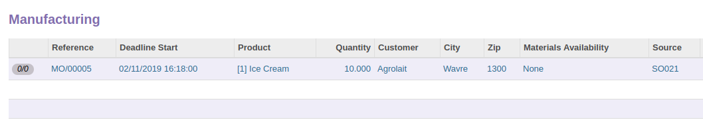

<section class="oe_container">
    <div class="oe_row oe_spaced">
        <h2 class="oe_slogan" style="color:#875A7B;">
            Generate Manufacturing Order from the Sale Orders
        </h2>
        <h3 class="oe_slogan">
            Make your Manufacturing Order immediately from the Sale Orders.
        </h3>
        <div>
            
        </div>
        <div>
            <h4 class="oe_slogan">
                1. Select Sale Order Line as Need Manufacturing
            </h4>
            <div class="oe_row"
                 style="padding-left: 20px; padding-right: 20px">
                <p class="oe_span6">
                    If nothing is selected as Need Manufacturing then all the
                    orders will be selected to create a manufacturing.
                </p>
                <p class="oe_span6">
                    If a Manufacturing Order have been previously created from
                    the Order Line, the orders will not be selected.
                </p>
            </div>
            
        </div>
        <div>
            <h4 class="oe_slogan">
                2. Push Create MRP button
            </h4>
            
        </div>
        <div>
            <h4 class="oe_slogan">
                3. Push Create button.
            </h4>
            
        </div>
        <div>
            <h4 class="oe_slogan">
                Your Manufacturing Order displayed.
            </h4>
            
        </div>
    </div>
</section>